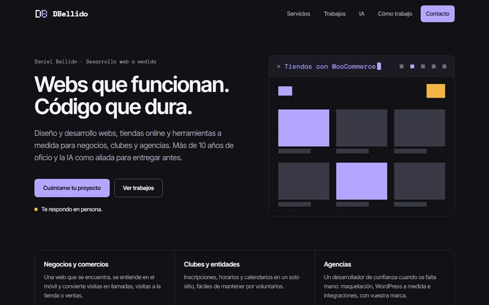
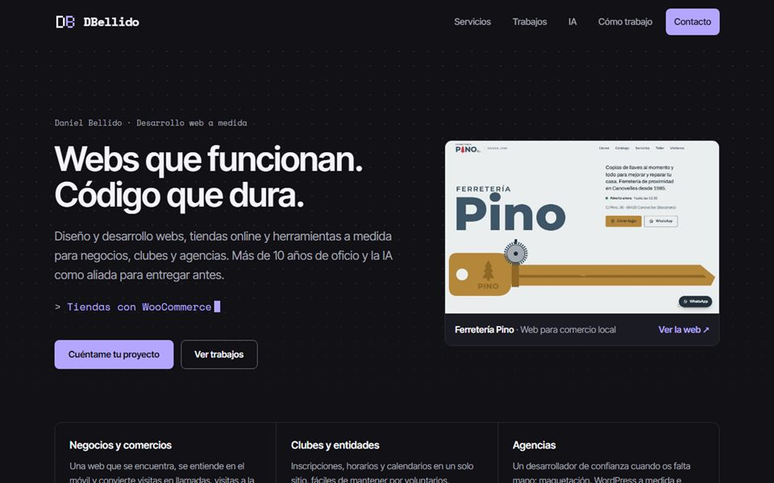
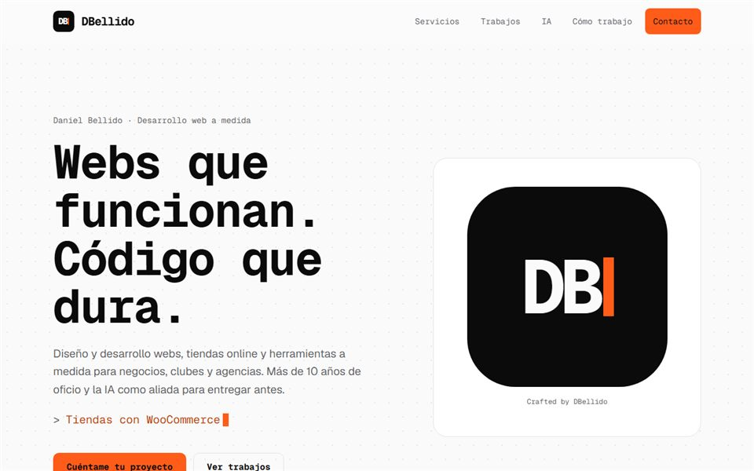
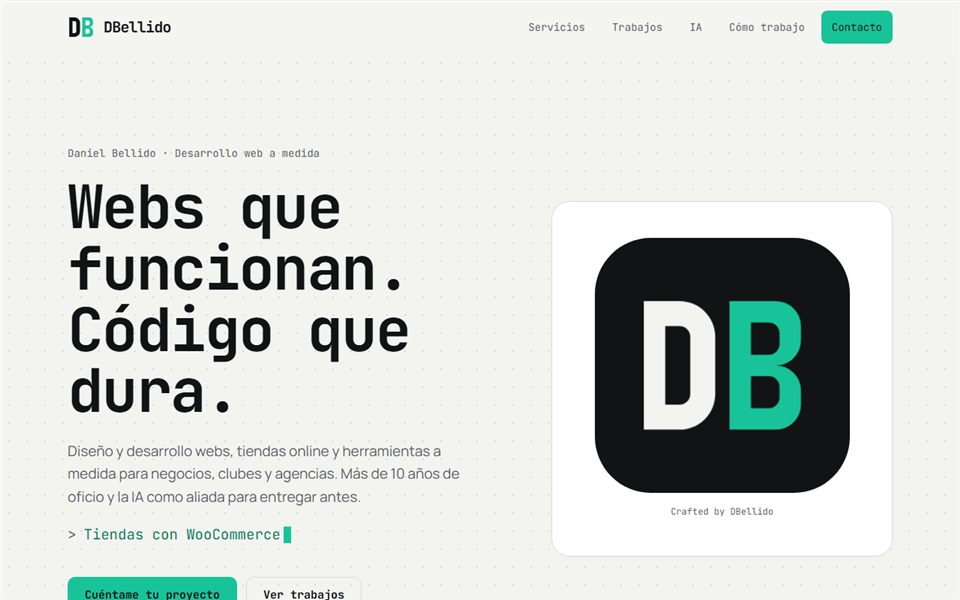

Versiones de la web

Web principal
Píxel v2
La web publicada: portada con animación, color ámbar y VortexBall entre los trabajos.
Abrir ↗Propuestas de diseño

Píxel
Fondo oscuro, lavanda y monograma de píxeles.

Terminal
Fondo claro, naranja y cursor de terminal.

Bloques
Fondo claro, menta y monograma construido con piezas.
Propuestas de sección
Qué puedo hacer por ti
La sección actual y dos enfoques nuevos: por necesidad y por oficio.
Trabajos
La sección actual, una versión fija con scroll y un carrusel.
IA con los pies en el suelo
La sección actual, el reparto de tareas y el antes y ahora.
Cómo trabajo
La sección actual, un recorrido con scroll y las dudas del cliente.
Quién hay detrás
La sección actual, una carta personal y la trayectoria a escala.
Preguntas y contacto
Las secciones actuales y dos propuestas para cada una.